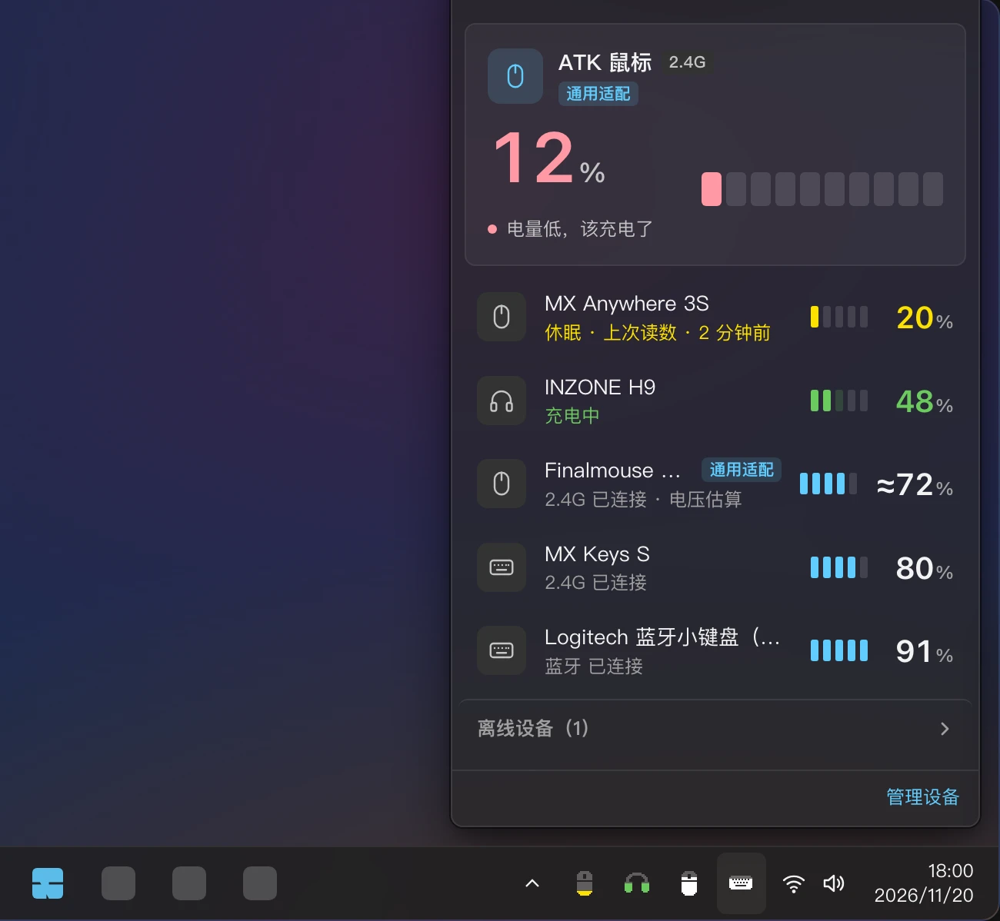
驱动调好，就可以关了
在厂商软件里把灵敏度、回报率调好以后，几格直接向 USB 接收器查询电量。官方驱动不用一直开着，后台少一个常驻程序。
- 只读
- 只发电量和状态查询，从不改设备设置，查完就释放设备。
- 一个工具，多个品牌
- 游狼、ATK、ULX、雷蛇、罗技、INZONE，以及 Windows 能读到电量的蓝牙设备，都在一处看。
- 不打扰游戏
- 全屏游戏时不弹窗，查询放慢到 5 分钟一次，低电量提醒等你回到桌面再说。
- 不联网
- 平时不连网络。只有你点「检查更新」才会查新版本，国内镜像优先。
看一眼，就知道还剩几格
每台设备一个托盘图标，颜色从底部往上填，填得越高电量越多。黄色偏低，红色过低，绿色是在充电。
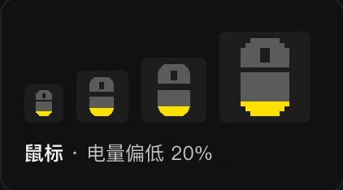
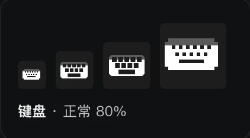
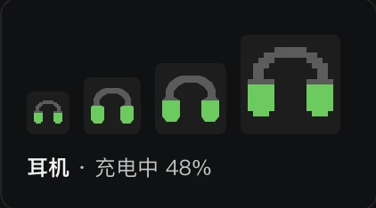
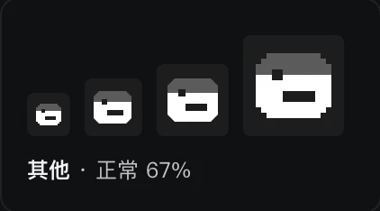
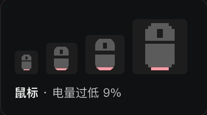
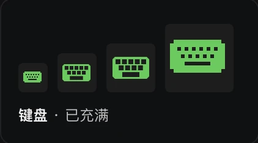
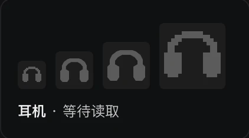
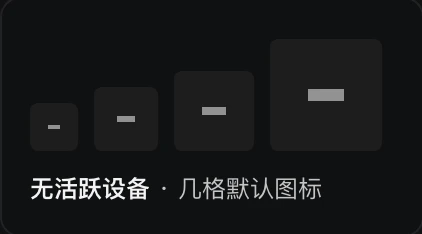
停在图标上，看完整读数
悬停卡片显示设备名、连接方式、百分比和读取时间。只显示电量最低一台时，卡片按电量从低到高列出所有设备。Windows 11 上，几格还可以在任务栏通知区左边直接横排显示「图标 + 百分比」，不用悬停。
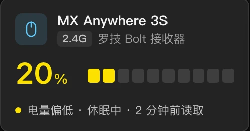
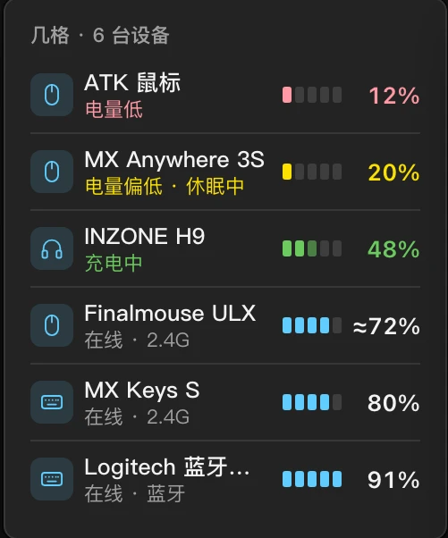
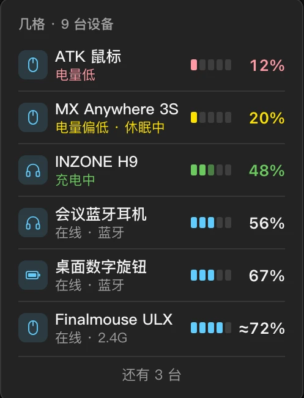

实机截图。Windows 10 任务栏，100% 缩放，按原始像素放大 4 倍：键盘电量充足，鼠标偏低显示为黄色。
支持的设备
经 2.4 GHz USB 接收器读取，也支持 Windows 提供电量的蓝牙设备。「已实机验证」表示作者在真机上确认过，「按资料适配」表示依据公开协议实现，欢迎反馈。
- Sony INZONE INZONE H9 一代，PC 档接收器。INZONE Hub 运行时自动退让 已实机验证
- 游狼 G-Wolves HTX Ultra 8K；同家族 Fenrir Pro 8K、HTM Plus、HSK Pro 2.0 8K，以及 21 款旧协议型号 HTX Ultra 8K 已实机验证
- 罗技 Logitech Bolt、Unifying、Nano、LIGHTSPEED 接收器；G533、G535、G733、G PRO X 等耳机。MX Keys S、MX Anywhere 3S 在 Windows 10 日常使用 按资料适配
- 雷蛇 Razer 72 款鼠标、15 款键盘，含 HyperPolling 接收器；BlackShark V2 Pro (2020)、V2 HyperSpeed 耳机 按资料适配
- ATK F1 Ultimate、ATK ZERO 及多款共用接收器，同家族未收录接收器也能识别 按资料适配
- Finalmouse UltralightX（ULX）2.4 GHz 接收器，以及同家族接收器 按资料适配
- 蓝牙设备 Windows 能读到电量的蓝牙鼠标、键盘和耳机，可在设置里关闭显示 按资料适配
- 新增任务栏直读条，在通知区左侧直接显示设备图标和电量百分比。空间不足时自动使用托盘图标，也可在「设置 → 显示位置」切换。
- 修复：0.2.9 的托盘图标没填色的部分几乎看不见。现在未填部分清楚显示为灰色。
- 修复：鼠标在多个设备图标之间移动时，悬停卡片闪烁、切换卡顿。
常见问题
Windows 提示「Windows 已保护你的电脑」怎么办？
安装包暂未做代码签名，第一次运行时 Windows 可能拦一下。点「更多信息」，再点「仍要运行」。不放心的话，可以先用 SHA256SUMS.txt 在 PowerShell 里核对安装包。
为什么 Windows 10 上没有任务栏直读条？
Windows 10 的任务栏结构和 Windows 11 不同，几格会改用托盘图标显示电量。悬停卡片、主面板和低电量提醒都照常可用。
要一直开着厂商驱动吗？
不用。在厂商软件里调好设备后就可以关掉。官方软件运行时可能会占用接收器，这时几格会退让，保留上次读数。
会上传我的数据吗？
不会。几格平时不联网。诊断报告只在你主动导出时生成，保存在本机，并先用记事本打开给你看，不含序列号、电脑名、用户名或键鼠输入。
我的设备不在列表里怎么办？
在几格里导出诊断报告，再到 GitHub 提交设备反馈。说明见 CONTRIBUTING.md。